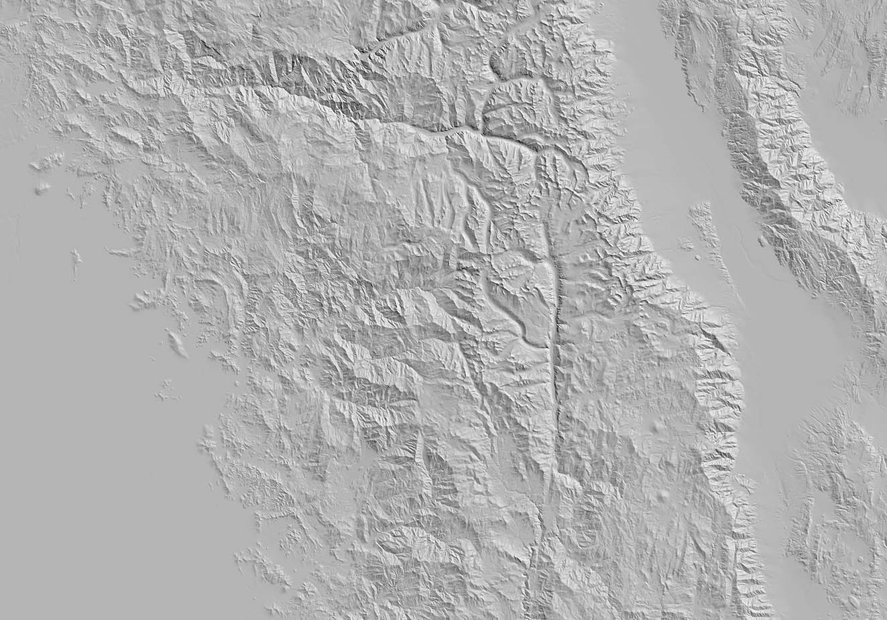

use the
◀ & ▶ keys to navigate
Maptime NYC
Hillshade Tutorial
Follow along with this presentation here:
What are they?
What kind of data?
Digital Elevation Model (DEM)
Why make a hillshade?

Open Source Software
- GDAL
(command line software)
- QGIS
(desktop GIS software)
Open Data Sources
- National Elevation Dataset (NED)
(hi-res / large scale)
- Shuttle Radar Topography Mission (STRM)
(low-res / small scale)
1. Download data
2. Process data
3. Generate the terrain layers
4. Composite our layers
Yay!